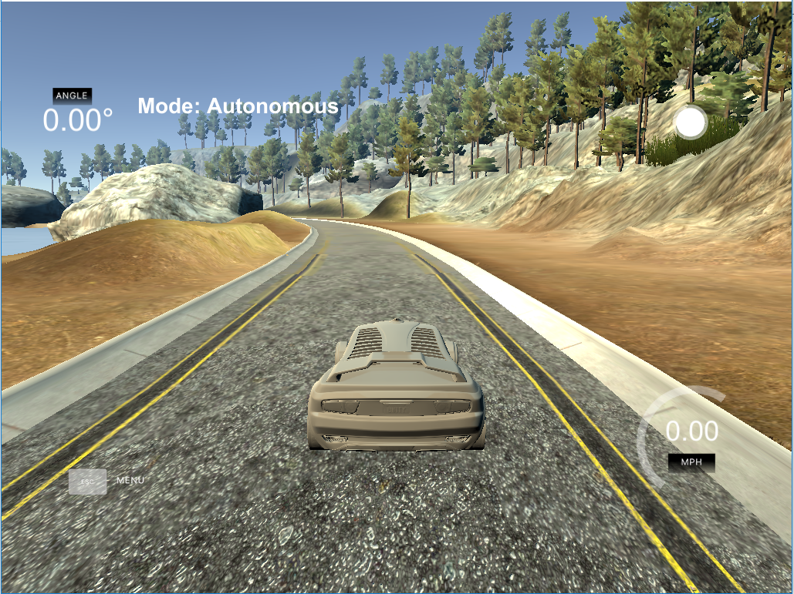

Behaviour Cloning for Autonomous Driving
Deep Learning · Keras · CNNs
An end-to-end convolutional network that learns to steer a car in simulation from human driving data. Highlights how data augmentation and careful collection of recovery/turn data are critical to robust autonomous control.